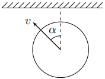
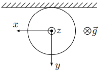
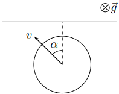
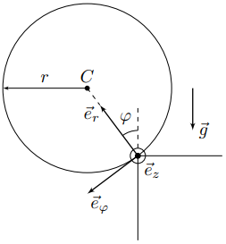

X24 (2024) — English translation
In ordinary life, you have probably encountered such physical situations as a collision of a rolling ball with a vertical wall, or a ball falling from the edge of a horizontal table. You also probably solved problems related to these situations, but you were limited to cases when the ball rolls in a direction perpendicular to the plane of the wall or the edge of the table. As part of this task, you are asked to generalize the results to the case when the speed of the center of the ball is not directed perpendicular to the plane of the wall or the edge of the table.
In all points of the problem, consider the following known: The ball in question with mass $m$ and radius $r$ is homogeneous. Rolling friction and spinning friction can be ignored within the framework of this problem. The acceleration due to gravity is $g$.
For all points of the problem, consider the following known:
This part of the problem is devoted to the study of the collision of a ball with a vertical wall. The ball rolls on a horizontal table without slipping, and its center moves at a speed $v$ in the direction forming an angle $\alpha$ with the normal to the wall. The ball does not rotate around the vertical axis $z$. At some moment the ball elastically collides with the wall. The coefficient of friction between the ball and the wall is $\mu$.
This part of the problem is devoted to the study of the collision of a ball with a vertical wall. The ball rolls on a horizontal table without slipping, and its center moves at a speed $v$ in the direction forming an angle $\alpha$ with the normal to the wall. The ball does not rotate around the vertical axis $z$. At some moment the ball elastically collides with the wall. The coefficient of friction between the ball and the wall is $\mu$.

Let us introduce a rectangular coordinate system $xyz$ with the origin at the center of the ball at the moment of collision as shown in the figure.

We will use the following notation: $C$ is the center of the ball; $\vec{v}_C$ — speed of the ball center; $\vec{\omega}$ is the angular velocity of the ball; $A$ is the point of the ball in contact with the wall (it is variable), and $\vec{v}_A$ is the speed of this point; $\vec{u}_A=v_{Ax}\vec{e}_x+v_{Az}\vec{e}_z$ and $\vec{u}_C=v_{Cx}\vec{e}_x+u_{Cz}\vec{e}_z$ are components of the velocity vectors of points $A$ and $C$, respectively, parallel to the wall; $\vec{r}$ is the radius vector drawn from the center of the ball $C$ to the point $A$.
We will use the following notation:
Note: explicit calculation of the work done by the friction force will significantly simplify the solution of the problem.
Further, as part of this task, you are asked to study the dynamics of a homogeneous ball falling from the straight edge of a horizontal table. Before reaching the edge, the center of the ball moved along the table with a speed $v$ at an angle $\alpha$ to the perpendicular drawn to the edge of the table in its plane. Before hitting the edge of the table, the ball did not rotate around a vertical axis. When solving the problem further, assume that the ball never slides across the table.
Further, as part of this task, you are asked to study the dynamics of a homogeneous ball falling from the straight edge of a horizontal table. Before reaching the edge, the center of the ball moved along the table with a speed $v$ at an angle $\alpha$ to the perpendicular drawn to the edge of the table in its plane. Before hitting the edge of the table, the ball did not rotate around a vertical axis. When solving the problem further, assume that the ball never slides across the table.

It is most convenient to solve the problem in the cylindrical coordinate system $(r{,}\varphi{,}z)$. The $z$ axis coincides with the edge of the table. The figure shows the unit vectors $\vec{e}_r$, $\vec{e}_\varphi$ and $\vec{e}_z$ of the cylindrical coordinate system. The radius $r$ of the ball is the distance from its center to the axis $z$, and the angle $\varphi$ is the angle of rotation of the line connecting the center of the ball to the point of its contact with the table and is measured from the position at which this line is vertical.
It is most convenient to solve the problem in the cylindrical coordinate system $(r{,}\varphi{,}z)$. The $z$ axis coincides with the edge of the table. The figure shows the unit vectors $\vec{e}_r$, $\vec{e}_\varphi$ and $\vec{e}_z$ of the cylindrical coordinate system. The radius $r$ of the ball is the distance from its center to the axis $z$, and the angle $\varphi$ is the angle of rotation of the line connecting the center of the ball to the point of its contact with the table and is measured from the position at which this line is vertical.

An arbitrary vector in a cylindrical coordinate system can be represented in the following form: $$\vec{A}=A_r\vec{e}_r+A_\varphi\vec{e}_\varphi+A_z\vec{e}_z{.} $$При дифференцировании вектора, заданного компонентами в цилиндрической системе координат, необходимо учитывать, что единичные орты цилиндрической системы координат являются переменными. Для их производных по времени можно записать: $$\cfrac{d\vec{e}_i}{dt}=\bigl[\vec{\Omega}\times\vec{e}_i\bigr]{,} $$где $\vec{\Omega}=\dot{\varphi}\vec{e}_z$ — угловая скорость вращения цилиндрической системы координат. Таким образом, проекции производной по времени вектора $\vec{A}$ записываются следующим образом: $$\bigl(\dot{\vec{A}}\bigr)_r=\dot{A}_r-\dot{\varphi}A_\varphi\qquad \bigl(\dot{\vec{A}}\bigr)_\varphi=\dot{A}_\varphi+\dot{\varphi}A_r\qquad \bigl(\dot{\vec{A}}\bigr)_z=\dot{A}_z $$These relations may be useful in the further process solving the problem.
This part is devoted to obtaining the basic kinematic equations that describe the motion of the ball.
In a plane perpendicular to the edge of the table, the ball moves in a circle, which greatly simplifies the analysis of this part of its movement.
In this part of the problem, you are asked to analyze the dependences on the angle $\varphi$ of the velocity components of the center of the ball $v_z$, as well as its angular rotation velocity $\omega_r$.
The solution to this problem is complicated by the fact that the angular velocity component $\omega_r$ cannot be obtained solely from the kinematic coupling equation, but it is possible to obtain an expression for its time derivative $\dot{\omega}_r$.
Source: https://pho.rs/p/3685